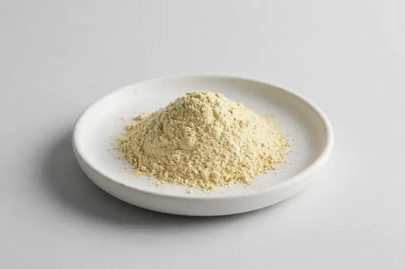

Guduchi — a well-known Ayurvedic stem botanical for immunity-positioned formulations.

Overview
Guduchi extract is derived from the stem of Tinospora cordifolia, one of the most recognized herbs in Ayurvedic-inspired product development. Buyers commonly request standardized cordifolioside grades, reflecting interest in the plant's diterpene glycoside profile. As a trading company in Xi'an working through partner producers, we assess each inquiry against a buyer's target specification before confirming what can be sourced.
Specifications below reflect commonly requested options in the market — not a stock list. Share your target spec and we'll confirm exactly what we can supply, honestly.
| Specification | Details |
|---|---|
| Botanical identity | Guduchi stem extract powder (Tinospora cordifolia) |
| Marker compound | Commonly requested spec grades: cordifolioside-standardized grades, sometimes alongside bitters or polysaccharide ratios; actual specs confirmed on inquiry |
| Appearance | Fine powder, color typical of the extract |
| Mesh size | Typically 80–100 mesh (confirm per inquiry) |
| Testing | COA/TDS arranged on request; scope agreed per your spec |
Applications
Documentation
We don't claim in-house labs or certifications we don't hold. COA and TDS documents can be arranged on request, and testing scope is agreed against your specification before supply.
FAQ
Related products
Nattokinase (fermented soybean enzyme)
Key marker: 20,000-40,000 FU/g
View specs →Spermidine (wheat germ-derived polyamine)
Key marker: 0.5-1% Spermidine
View specs →Phosphatidylserine
Key marker: 20-50% PS
View specs →Rubia cordifolia
Key marker: Purpurin Content
View specs →Eclipta prostrata
Key marker: Wedelolactone Content
View specs →Send your target spec and volumes — we'll respond with a tailored quotation.
Request a Quote